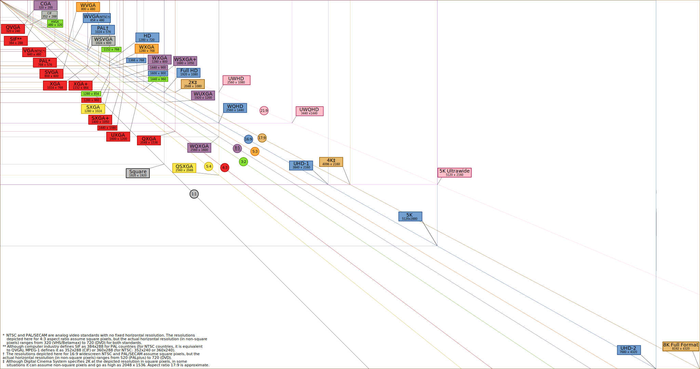

Astuces informatiques¶
- Auteur:
J.Soranzo
- Entity:
- Date:
Novembre 2019
- Mise à jour:
la date git fait foi
Microsoft¶
Connaître le type de licence Windows10¶
slmgr -dli
défaire des connexions réseau existantes¶
net use /DELETE *
Copier une arborescence¶
Copy arbo :XCOPY source destination /T /E
copy de fichiers plus rapide¶
Commande pour copier de fichiers plus rapidement qu’avec l’explorer de Windows.
robotcopy __soureDir __destDir /mir /r:1 /w:1 /v
ou
robotcopy __soureDir __destDir /mir /v
Copier des fichiers efficacement
Ou alors fastcopy !
Afficher le clavier virtuel¶
Dans la barre de recherche taper : osk (testé sous W7 & W10)
Identifier un driver¶
Pour identifier un driver.
Site driveridentifier.com [2]
Ne pas passer par le site mais taper directement dans google: driveridentifier lenomdudriver
Gestionnaire de tâches ou de disk (en mode admin)¶
Depuis cmd en mode admin par exemple… taper taskmgr ou diskmgmt.msc
Sinon dans la barre de recherche taskm ou diskmgmt.msc… clic droit exécuter en tant qu’administrateur.
Danger
texte
Gestionnaire de périphérique dans la barre des tâches¶
Le gestionnaire de fichier dans la barre des taches: Créer tout simplement un lien vers le fichier suivant:
dans Windows/system32 fichier devmgmt.msc
Sous Windows 10 ce n’est plus vraiment nécessaire puisque un clic droit sur l’icône démarrer permet d’y accéder rapidement.
Modification d’une variable en mode console¶
set PATH=%PATH%;nouveau_chemin
Configuration réseau en cmd admmin¶
utilisation de netsh. Une page web netsh utile [3]
netsh peut être utilisé soit en ligne de commande full ou de manière interractive.
Ligne de commandes:
netsh interface ip4 set address name="nomdelinterface" source=dhcp
netsh interface ipv4 set address name="nomdelinterface" static IP netmask passerelle
netsh interface ipv4 show config
netsh interface show interface
En mode interractive, ce sont les même commandes (très appréciable mais qu’on retre petit à petit et avec un prompt. Exemple: on tape d’abord netsh, on a alors le prompt:
netsh>
Puis on saisie interface, et là, le prompt devient:
netsh interface>
En quelque sorte, opn est descendu d’un cran et on paut alors utilisé toutes les commandes en lien avec interface. Pour remonter d’un cran c’est .. et pour tout quitter bye. Dernier truc:
netsh>help : le help fonctionne dans les différents niveaux
Clear de la console¶
Sous Linux clear
Sous Windows cls !
HTML¶
une page html minimale: sur Boostrap get started [4]
Ou dans Visual Studio Code : nouveau fichier, en bas à droite passer de plain text à html
puis taper html (normalement provoque l’affichage du snippet html:5)
Les nombres en binaires, ordres de grandeur¶
1k = 1024 = 2^10
1 Méga = 1024 * 1024 = 2^20
1 Giga = 1024 * 1024 * 1024 = 2^30 = 1 073 741 824 un peu plus de 1 milliard
1 Téra = 2^40 = 1 099 511 627 776 un pleu plus de 1099 milliard
Il existe des unité au dessus:
1 Péta = 2^50
1 Exa = 2^60
2^8 : 256
2^16 : 16356 soit 1k
2^32 = 4 294 967 296 soit un peu plus de 4 milliard 2^(32-20) = 2^12 Méga = 4096 Méga = 2^2 Giga !
2^64 = 18 446 744 073 709 551 616 un peu plus de 18 milliard de milliard ou encore 18*10^18 2^24 Téra
2^128:
2^(2^6) = 340 282 366 920 938 463 463 374 607 431 768 211 456 comme on prononce ce nombre ?
2^40 * 2^40 * 2^40 * 2^8 soit 256 Téra de Téra de Téra
3.4*10^38 vs 10^9 : 38/9 environ 4 donc 3.4 milliard de milliard de milliard de milliard
Taille des écrans¶
Source wikipedia List of common resolutions [5]
{kind=link}
EPOC TIME¶
ou LINUX TIME ou TIMESTAMP
The site Epoch & Unix Timestamp Conversion Tools [6]
Sur Dan’s Tools